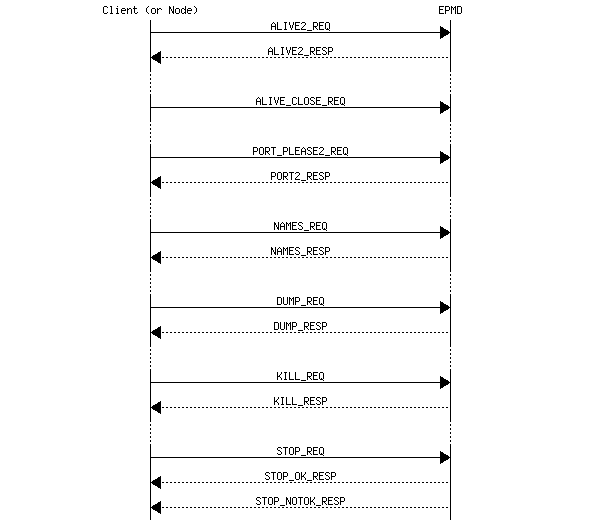

11 Distribution Protocol
The description here is far from complete and will therefore be further refined in upcoming releases. The protocols both from Erlang nodes towards EPMD (Erlang Port Mapper Daemon) and between Erlang nodes, however, are stable since many years.
The distribution protocol can be divided into four (4) parts:
-
1. Low level socket connection.
- 2. Handshake, interchange node name and authenticate.
- 3. Authentication (done by net_kernel).
- 4. Connected.
A node fetches the Port number of another node through the EPMD (at the other host) in order to initiate a connection request.
For each host where a distributed Erlang node is running there should also be an EPMD running. The EPMD can be started explicitly or automatically as a result of the Erlang node startup.
By default EPMD listens on port 4369.
3 and 4 are performed at the same level but the net_kernel disconnects the other node if it communicates using an invalid cookie (after one (1) second).
The integers in all multi-byte fields are in big-endian order.
11.1 EPMD Protocol
The requests served by the EPMD (Erlang Port Mapper Daemon) are summarized in the figure below.
Figure 11.1: Summary of EPMD requests.
Each request *_REQ is preceded by a two-byte length field. Thus, the overall request format is:
| 2 | n |
| Length | Request |
Register a node in the EPMD
When a distributed node is started it registers itself in EPMD. The message ALIVE2_REQ described below is sent from the node towards EPMD. The response from EPMD is ALIVE2_RESP.
| 1 | 2 | 1 | 1 | 2 | 2 | 2 | Nlen | 2 | Elen |
| 120 | PortNo | NodeType | Protocol | HighestVersion | LowestVersion | Nlen | NodeName | Elen | Extra |
- PortNo
- The port number on which the node accept connection requests.
- NodeType
- 77 = normal Erlang node, 72 = hidden node (C-node),...
- Protocol
- 0 = tcp/ip-v4, ...
- HighestVersion
- The highest distribution version that this node can handle. The value in R6B and later is 5.
- LowestVersion
- The lowest distribution version that this node can handle. The value in R6B and later is 5.
- Nlen
- The length (in bytes) of the NodeName field.
- NodeName
- The NodeName as an UTF-8 encoded string of Nlen bytes.
- Elen
- The length of the Extra field.
- Extra
- Extra field of Elen bytes.
The connection created to the EPMD must be kept as long as the node is a distributed node. When the connection is closed the node is automatically unregistered from the EPMD.
The response message ALIVE2_RESP is described below.
| 1 | 1 | 2 |
| 121 | Result | Creation |
Result = 0 -> ok, Result > 0 -> error
Unregister a node from the EPMD
A node unregisters itself from the EPMD by simply closing the TCP connection towards EPMD established when the node was registered.
Get the distribution port of another node
When one node wants to connect to another node it starts with a PORT_PLEASE2_REQ request towards EPMD on the host where the node resides in order to get the distribution port that the node listens to.
| 1 | N |
| 122 | NodeName |
where N = Length - 1
| 1 | 1 |
| 119 | Result |
Or
| 1 | 1 | 2 | 1 | 1 | 2 | 2 | 2 | Nlen | 2 | Elen |
| 119 | Result | PortNo | NodeType | Protocol | HighestVersion | LowestVersion | Nlen | NodeName | Elen | Extra |
If Result > 0, the packet only consists of [119, Result].
EPMD will close the socket as soon as it has sent the information.
Get all registered names from EPMD
This request is used via the Erlang function net_adm:names/1,2. A TCP connection is opened towards EPMD and this request is sent.
| 1 |
| 110 |
The response for a NAMES_REQ looks like this:
| 4 | |
| EPMDPortNo | NodeInfo* |
NodeInfo is a string written for each active node. When all NodeInfo has been written the connection is closed by EPMD.
NodeInfo is, as expressed in Erlang:
io:format("name ~ts at port ~p~n", [NodeName, Port]).
Dump all data from EPMD
This request is not really used, it should be regarded as a debug feature.
| 1 |
| 100 |
The response for a DUMP_REQ looks like this:
| 4 | |
| EPMDPortNo | NodeInfo* |
NodeInfo is a string written for each node kept in EPMD. When all NodeInfo has been written the connection is closed by EPMD.
NodeInfo is, as expressed in Erlang:
io:format("active name ~ts at port ~p, fd = ~p ~n",
[NodeName, Port, Fd]).
or
io:format("old/unused name ~ts at port ~p, fd = ~p~n",
[NodeName, Port, Fd]).
Kill the EPMD
This request will kill the running EPMD. It is almost never used.
| 1 |
| 107 |
The response fo a KILL_REQ looks like this:
| 2 |
| OKString |
where OKString is "OK".
STOP_REQ (Not Used)
| 1 | n |
| 115 | NodeName |
where n = Length - 1
The current implementation of Erlang does not care if the connection to the EPMD is broken.
The response for a STOP_REQ looks like this.
| 7 |
| OKString |
where OKString is "STOPPED".
A negative response can look like this.
| 7 |
| NOKString |
where NOKString is "NOEXIST".
11.2 Distribution Handshake
This section describes the distribution handshake protocol introduced in the OTP-R6 release of Erlang/OTP. This description was previously located in $ERL_TOP/lib/kernel/internal_doc/distribution_handshake.txt, and has more or less been copied and "formatted" here. It has been more or less unchanged since the year 1999, but the handshake should not have changed much since then either.
General
The TCP/IP distribution uses a handshake which expects a connection based protocol, i.e. the protocol does not include any authentication after the handshake procedure.
This is not entirely safe, as it is vulnerable against takeover attacks, but it is a tradeoff between fair safety and performance.
The cookies are never sent in cleartext and the handshake procedure expects the client (called A) to be the first one to prove that it can generate a sufficient digest. The digest is generated with the MD5 message digest algorithm and the challenges are expected to be very random numbers.
Definitions
A challenge is a 32 bit integer number in big endian order. Below the function gen_challenge() returns a random 32 bit integer used as a challenge.
A digest is a (16 bytes) MD5 hash of the Challenge (as text) concatenated with the cookie (as text). Below, the function gen_digest(Challenge, Cookie) generates a digest as described above.
An out_cookie is the cookie used in outgoing communication to a certain node, so that A's out_cookie for B should correspond with B's in_cookie for A and the other way around. A's out_cookie for B and A's in_cookie for B need NOT be the same. Below the function out_cookie(Node) returns the current node's out_cookie for Node.
An in_cookie is the cookie expected to be used by another node when communicating with us, so that A's in_cookie for B corresponds with B's out_cookie for A. Below the function in_cookie(Node) returns the current node's in_cookie for Node.
The cookies are text strings that can be viewed as passwords.
Every message in the handshake starts with a 16 bit big endian integer which contains the length of the message (not counting the two initial bytes). In erlang this corresponds to the gen_tcp option {packet, 2}. Note that after the handshake, the distribution switches to 4 byte packet headers.
The Handshake in Detail
Imagine two nodes, node A, which initiates the handshake and node B, which accepts the connection.
- 1) connect/accept
A connects to B via TCP/IP and B accepts the connection.
- 2) send_name/receive_name
-
A sends an initial identification to B. B receives the message. The message looks like this (every "square" being one byte and the packet header removed):
+---+--------+--------+-----+-----+-----+-----+-----+-----+-...-+-----+ |'n'|Version0|Version1|Flag0|Flag1|Flag2|Flag3|Name0|Name1| ... |NameN| +---+--------+--------+-----+-----+-----+-----+-----+-----+-... +-----+
The 'n' is just a message tag. Version0 and Version1 is the distribution version selected by node A, based on information from EPMD. (16 bit big endian) Flag0 ... Flag3 are capability flags, the capabilities defined in $ERL_TOP/lib/kernel/include/dist.hrl. (32 bit big endian) Name0 ... NameN is the full nodename of A, as a string of bytes (the packet length denotes how long it is).
- 3) recv_status/send_status
-
B sends a status message to A, which indicates if the connection is allowed. The following status codes are defined:
- ok
- The handshake will continue.
- ok_simultaneous
- The handshake will continue, but A is informed that B has another ongoing connection attempt that will be shut down (simultaneous connect where A's name is greater than B's name, compared literally).
- nok
- The handshake will not continue, as B already has an ongoing handshake which it itself has initiated. (simultaneous connect where B's name is greater than A's).
- not_allowed
- The connection is disallowed for some (unspecified) security reason.
- alive
- A connection to the node is already active, which either means that node A is confused or that the TCP connection breakdown of a previous node with this name has not yet reached node B. See 3B below.
This is the format of the status message:
+---+-------+-------+-...-+-------+ |'s'|Status0|Status1| ... |StatusN| +---+-------+-------+-...-+-------+
's' is the message tag Status0 ... StatusN is the status as a string (not terminated)
- 3B) send_status/recv_status
If status was 'alive', node A will answer with another status message containing either 'true' which means that the connection should continue (The old connection from this node is broken), or 'false', which simply means that the connection should be closed, the connection attempt was a mistake.
- 4) recv_challenge/send_challenge
-
If the status was ok or ok_simultaneous, The handshake continues with B sending A another message, the challenge. The challenge contains the same type of information as the "name" message initially sent from A to B, with the addition of a 32 bit challenge:
+---+--------+--------+-----+-----+-----+-----+-----+-----+-----+-----+-----+-----+-...-+-----+ |'n'|Version0|Version1|Flag0|Flag1|Flag2|Flag3|Chal0|Chal1|Chal2|Chal3|Name0|Name1| ... |NameN| +---+--------+--------+-----+-----+-----+-----+-----+-----+-----+-----+-----+-----+-... +-----+
Where Chal0 ... Chal3 is the challenge as a 32 bit big endian integer and the other fields are B's version, flags and full nodename.
- 5) send_challenge_reply/recv_challenge_reply
-
Now A has generated a digest and its own challenge. Those are sent together in a package to B:
+---+-----+-----+-----+-----+-----+-----+-----+-----+-...-+------+ |'r'|Chal0|Chal1|Chal2|Chal3|Dige0|Dige1|Dige2|Dige3| ... |Dige15| +---+-----+-----+-----+-----+-----+-----+-----+-----+-...-+------+
Where 'r' is the tag, Chal0 ... Chal3 is A's challenge for B to handle and Dige0 ... Dige15 is the digest that A constructed from the challenge B sent in the previous step.
- 6) recv_challenge_ack/send_challenge_ack
-
B checks that the digest received from A is correct and generates a digest from the challenge received from A. The digest is then sent to A. The message looks like this:
+---+-----+-----+-----+-----+-...-+------+ |'a'|Dige0|Dige1|Dige2|Dige3| ... |Dige15| +---+-----+-----+-----+-----+-...-+------+
Where 'a' is the tag and Dige0 ... Dige15 is the digest calculated by B for A's challenge.
- 7)
A checks the digest from B and the connection is up.
Semigraphic View
A (initiator) B (acceptor) TCP connect -----------------------------------------> TCP accept send_name -----------------------------------------> recv_name <---------------------------------------- send_status recv_status (if status was 'alive' send_status - - - - - - - - - - - - - - - - - - - -> recv_status) ChB = gen_challenge() (ChB) <---------------------------------------- send_challenge recv_challenge ChA = gen_challenge(), OCA = out_cookie(B), DiA = gen_digest(ChB,OCA) (ChA, DiA) send_challenge_reply --------------------------------> recv_challenge_reply ICB = in_cookie(A), check: DiA == gen_digest (ChB, ICB) ? - if OK: OCB = out_cookie(A), DiB = gen_digest (DiB) (ChA, OCB) <----------------------------------------- send_challenge_ack recv_challenge_ack DONE ICA = in_cookie(B), - else check: CLOSE DiB == gen_digest(ChA,ICA) ? - if OK DONE - else CLOSE
The Currently Defined Distribution Flags
Currently (OTP-R16) the following capability flags are defined:
%% The node should be published and part of the global namespace -define(DFLAG_PUBLISHED,1). %% The node implements an atom cache (obsolete) -define(DFLAG_ATOM_CACHE,2). %% The node implements extended (3 * 32 bits) references. This is %% required today. If not present connection will be refused. -define(DFLAG_EXTENDED_REFERENCES,4). %% The node implements distributed process monitoring. -define(DFLAG_DIST_MONITOR,8). %% The node uses separate tag for fun's (lambdas) in the distribution protocol. -define(DFLAG_FUN_TAGS,16#10). %% The node implements distributed named process monitoring. -define(DFLAG_DIST_MONITOR_NAME,16#20). %% The (hidden) node implements atom cache (obsolete) -define(DFLAG_HIDDEN_ATOM_CACHE,16#40). %% The node understand new fun-tags -define(DFLAG_NEW_FUN_TAGS,16#80). %% The node is capable of handling extended pids and ports. This is %% required today. If not present connection will be refused. -define(DFLAG_EXTENDED_PIDS_PORTS,16#100). %% -define(DFLAG_EXPORT_PTR_TAG,16#200). %% -define(DFLAG_BIT_BINARIES,16#400). %% The node understands new float format -define(DFLAG_NEW_FLOATS,16#800). %% -define(DFLAG_UNICODE_IO,16#1000). %% The node implements atom cache in distribution header. -define(DFLAG_DIST_HDR_ATOM_CACHE,16#2000). %% The node understand the SMALL_ATOM_EXT tag -define(DFLAG_SMALL_ATOM_TAGS, 16#4000). %% The node understand UTF-8 encoded atoms -define(DFLAG_UTF8_ATOMS, 16#10000).
11.3 Protocol between connected nodes
As of erts version 5.7.2 the runtime system passes a distribution flag in the handshake stage that enables the use of a distribution header on all messages passed. Messages passed between nodes are in this case on the following format:
| 4 | d | n | m |
| Length | DistributionHeader | ControlMessage | Message |
where:
Length is equal to d + n + m
ControlMessage is a tuple passed using the external format of Erlang.
Message is the message sent to another node using the '!' (in external format). Note that Message is only passed in combination with a ControlMessage encoding a send ('!').
Also note that the version number is omitted from the terms that follow a distribution header.
Nodes with an erts version less than 5.7.2 does not pass the distribution flag that enables the distribution header. Messages passed between nodes are in this case on the following format:
| 4 | 1 | n | m |
| Length | Type | ControlMessage | Message |
where:
Length is equal to 1 + n + m
Type is: 112 (pass through)
ControlMessage is a tuple passed using the external format of Erlang.
Message is the message sent to another node using the '!' (in external format). Note that Message is only passed in combination with a ControlMessage encoding a send ('!').
The ControlMessage is a tuple, where the first element indicates which distributed operation it encodes.
- LINK
-
{1, FromPid, ToPid}
- SEND
-
{2, Cookie, ToPid}
Note followed by Message
- EXIT
-
{3, FromPid, ToPid, Reason}
- UNLINK
-
{4, FromPid, ToPid}
- NODE_LINK
-
{5}
- REG_SEND
-
{6, FromPid, Cookie, ToName}
Note followed by Message
- GROUP_LEADER
-
{7, FromPid, ToPid}
- EXIT2
-
{8, FromPid, ToPid, Reason}
11.4 New Ctrlmessages for distrvsn = 1 (OTP R4)
- SEND_TT
-
{12, Cookie, ToPid, TraceToken}
Note followed by Message
- EXIT_TT
-
{13, FromPid, ToPid, TraceToken, Reason}
- REG_SEND_TT
-
{16, FromPid, Cookie, ToName, TraceToken}
Note followed by Message
- EXIT2_TT
-
{18, FromPid, ToPid, TraceToken, Reason}
11.5 New Ctrlmessages for distrvsn = 2
distrvsn 2 was never used.
11.6 New Ctrlmessages for distrvsn = 3 (OTP R5C)
None, but the version number was increased anyway.
11.7 New Ctrlmessages for distrvsn = 4 (OTP R6)
These are only recognized by Erlang nodes, not by hidden nodes.
- MONITOR_P
-
{19, FromPid, ToProc, Ref} FromPid = monitoring process ToProc = monitored process pid or name (atom)
- DEMONITOR_P
-
{20, FromPid, ToProc, Ref} We include the FromPid just in case we want to trace this. FromPid = monitoring process ToProc = monitored process pid or name (atom)
- MONITOR_P_EXIT
-
{21, FromProc, ToPid, Ref, Reason} FromProc = monitored process pid or name (atom) ToPid = monitoring process Reason = exit reason for the monitored process